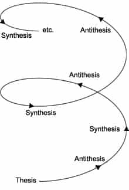

Daryush "Roosh" Valizadeh created ROK in October 2012. You can visit his blog at RooshV.com or follow him on Twitter and Facebook.


A popular expression these days is “politics is downstream from culture,” which was said by the late Andrew Breitbart. While it is certainly true, the reverse is also true. Culture and politics are deeply intertwined, affecting each other proportionally within an escalating feedback loop.
Where did game come from? In a recent podcast, I explained with a guest that game was a direct reaction to feminism, which was a top-down political effort by the elites, such as the CIA, to employ women (to lower the price of labor) and to destroy the traditional family unit (to make women dependent on elite-controlled institutions instead of men). Game was an effective individual response that helped push new political action in the form of “rape culture,” which attempted to allow most instances of sex to be defined as rape. The game reaction to that is to avoid leftist women, record sexual encounters, or expatriate. The leftists will react to that in due time, perhaps forcing a man to date certain woman like a Christian baker is forced to bake cakes for homosexuals.
Where did the alt right come from? It is a direct reaction to a high number of non-white immigrants to the United States, which began with the 1965 Immigration Law. The culture of pepe, cuck-shaming, and a white ethno-state is the 50-year delayed response to one law. The rise of the alt right affected politics by helping elect Donald Trump as President while introducing many dissident figures to the mainstream. The political reaction of trying to shut them all down is ongoing.
From every dissident reaction came before it a law that was created in response to a previous cultural reaction, which was formed from an even older political reaction. This chain of causality can be traced back to the first society in a process resembling a Hegelian Dialectic of action clashing with reaction to form a synthesis that will then collide with another action. Everything is connected from the beginning of man, and what we do today will have ripple effects for the remainder of humanity.

What’s interesting to note is that feminism and immigration to the Western world was disproportionately promoted and enabled by Jews. Therefore in the case of modern dissident movements, a more apt saying would be “reaction is downstream from Jewish action.” If you are to believe that Jews are at the top of most Western institutions, dissident movements are a reaction to their power.
The life of an elite Jew is to control the non-Jew through both cultural and political means. The non-Jew responds and then the Jew adapts to that response. The lives of Jews and non-Jews are therefore inexorably tied together. Understand that any attempt to control something external to you means that you are also being controlled by it, since your existence becomes primarily a response to the external. The fact that the behavior of a Jew is at least 95% identical to that of a non-Jew is testament to that.
I respect the late Andrew Breitbart and the work he did into jump-starting the dissident right, but I believe he missed the other part of the equation of how strongly politics, particularly laws, influence culture. If I stop and think of my life, it is primarily a result of laws surrounding immigration (hence my birth to Middle Eastern immigrants in the USA) and feminism (hence my foray into game). My “culture” would be rather different in the absence of these two forces, and that’s assuming I would even have come into existence at all.
This article was originally published on Roosh V.
Read Next: The American Cold Civil War